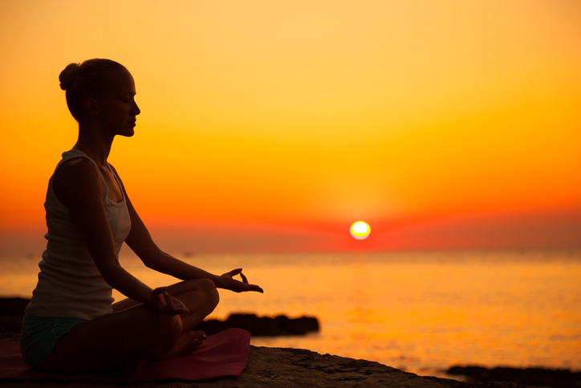

Meditação
A chave para a serenidade

A meditação, uma prática ancestral que tem suas raízes em diversas tradições espirituais, tem ganhado cada vez mais reconhecimento na sociedade moderna. Ao longo dos anos, essa técnica simples, porém profunda, demonstrou ter inúmeros benefícios para o corpo e a mente, auxiliando as pessoas a encontrar paz, equilíbrio e clareza mental. Neste artigo, exploraremos o mundo da meditação, seus diversos métodos e os benefícios que ela pode proporcionar em nossa vida cotidiana.
O Que é Meditação?
A meditação é uma prática que envolve focar a mente em um objeto, pensamento, som ou simplesmente na própria respiração, com o objetivo de alcançar um estado de concentração e relaxamento profundo. Ela pode ser encontrada em várias formas, incluindo meditação mindfulness, meditação transcendental, meditação Zen e muitas outras.
Benefícios da Meditação:
1 - Redução do Estresse: A meditação é conhecida por reduzir significativamente os níveis de estresse. A prática regular ajuda a diminuir a produção de hormônios do estresse, como o cortisol, levando a uma sensação de calma e relaxamento.
2 - Melhoria da Saúde Mental: Estudos mostraram que a meditação pode reduzir os sintomas de ansiedade e depressão, promovendo um maior equilíbrio emocional e bem-estar mental.
3 - Aumento da Consciência: A meditação mindfulness ajuda a aumentar a consciência do momento presente, permitindo que as pessoas vivam de forma mais consciente, apreciando as pequenas coisas da vida.
4 - Melhoria da Concentração: A prática regular de meditação aumenta a capacidade de concentração e foco, beneficiando o desempenho acadêmico e profissional.
5 - Controle da Pressão Arterial: A meditação tem demonstrado reduzir a pressão arterial em pessoas com hipertensão, contribuindo para a saúde cardiovascular.
6 - Aumento da Empatia e Compaixão: A meditação também tem sido associada ao aumento da empatia e da compaixão, fortalecendo relacionamentos interpessoais.
Como começar:
A meditação pode ser praticada por qualquer pessoa, independentemente da idade ou nível de experiência. Para começar, siga estas etapas simples:
1 - Encontre um Lugar Tranquilo: Escolha um local calmo e tranquilo onde você possa se sentar confortavelmente.
2. Escolha um Foco: Você pode escolher um objeto, um mantra (uma palavra ou frase repetida), ou simplesmente sua respiração como seu foco de meditação.
3. Sente-se Confortavelmente: Sente-se em uma posição confortável com a coluna ereta, mãos apoiadas e olhos fechados.
4. Concentre-se: Direcione sua atenção para o seu foco escolhido. Quando sua mente vagar, gentilmente traga sua atenção de volta ao objeto da meditação.
5. Pratique a Regularidade: A prática da meditação é mais eficaz quando realizada regularmente. Comece com alguns minutos por dia e, gradualmente, aumente a duração conforme se sentir confortável.
Conclusão:
A meditação é uma ferramenta poderosa para o autoconhecimento e a melhoria do bem-estar físico e mental. À medida que enfrentamos o estresse e a agitação da vida moderna, a meditação oferece um refúgio de tranquilidade e clareza. Através da prática constante, podemos colher os benefícios profundos da meditação e melhorar significativamente nossa qualidade de vida. Portanto, reserve um tempo para se conectar consigo mesmo e experimentar os benefícios transformadores da meditação. Sua mente e corpo agradecerão.